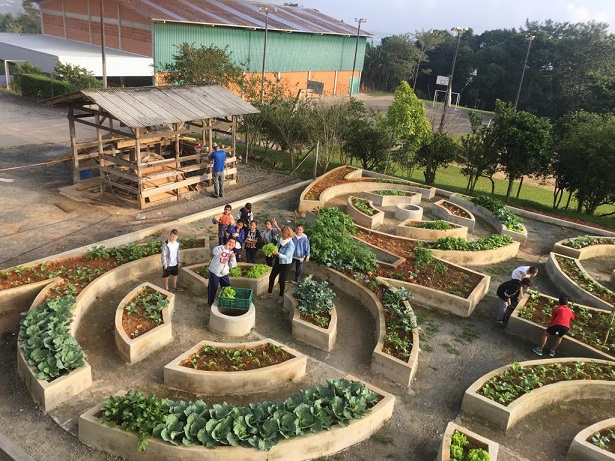

Projeto: Transformando Vidas
O projeto Transformando Vidas é uma iniciativa voltada ao desenvolvimento de hortas comunitárias urbanas e educação ambiental. O projeto integra as mulheres através do cultivo sustentável de hortaliças e PANCs (Plantas Alimentícias Não Convencionais), promovendo saúde alimentar, nutrição saudável e integração.
Como a comunidade contribui: Doando ferramentas de jardinagem, sementes orgânicas ou participando diretamente dos mutirões semanais de manejo e cuidado com a terra.